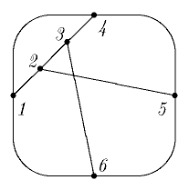
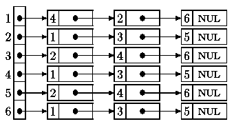

TIPO vertico = 1..6;
erRef = ↑listero;
listero =
RIKORDO
nro: vertico; { la utila, informa kampo }
plu: erRef; { ligilo al la vosto de la listo }
FINO;
VAR grafeo: TABELO [vertico] EL erRef; Kun tiuj difinoj, por la grafeo
 la interna prezento aspektas jene:
.